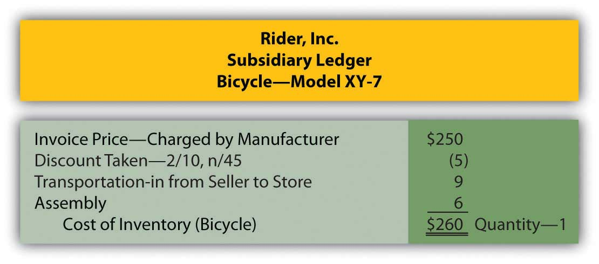

At the end of this section, students should be able to meet the following objectives:
Question: The asset section of the February 28, 2009, balance sheet produced by Best Buy Co. Inc. reports net accounts receivable of $1.868 billion. Based on discussions in the previous chapter, a decision maker should know that this figure reflects net realizable value—the estimation by officials of the amount of cash that will be collected from the receivables owed to the company by its customers. Knowledge of financial accounting rules allows an individual to understand the information being conveyed in a set of financial statements.
As is common, the next account that appears on Best Buy’s balance sheet is inventory, all the items held on that date that were acquired for sales purposes—televisions, cameras, computers, and the like. The figure disclosed by the company for this asset is $4.753 billion. Does this balance also indicate net realizable value—the cash expected to be generated from the company’s merchandise—or is different information reflected? On a balance sheet, what does the amount reported for inventory represent?
Answer: The challenge of analyzing the various assets reported by an organization would be reduced substantially if every monetary number disclosed the same basic information, such as net realizable value. However, over the decades, virtually every asset has come to have its own individualized method of reporting, one created to address the special peculiarities of that account. Thus, the term “presented fairly” often has a totally different meaning for each asset. Reporting accounts receivables, for example, at net realizable value has no impact on the approach that has come to be accepted for inventoryA current asset bought or manufactured for the purpose of selling in order to generate revenue..
The reporting of inventory is especially unique because the reported balance is not as standardized as with accounts receivable. For example, under certain circumstances, the balance sheet amount shown for inventory actually can reflect net realizable value. Several other meanings for the reported balance, though, are more likely. The range of accounting alternatives encountered in analyzing this asset emphasizes the importance of reading the notes included with financial statements rather than fixating on a few reported numbers alone. Without careful study of the additional disclosures, a decision maker simply cannot know what Best Buy means by the $4.753 billion figure reported for “merchandise inventories.” Another company could show the identical number for its inventory and still be reporting considerably different information.
Question: Accounting for inventory seems particularly complicated. A logical approach to the coverage here is needed. In coming to understand the reporting methodology that is utilized with this asset, where should the discussion begin? What is the first issue that an accountant faces in establishing an appropriate balance for inventory so that it is reported in conformity with U.S. GAAP?
Answer: The study of inventory and its financial reporting should begin by defining “cost.” In acquiring each item, officials make the decision to allocate a certain amount of scarce resources. What did the company expend to obtain its inventory? That is a reasonable question to address.
To illustrate, assume that a sporting goods company (Rider Inc.) acquires a new bicycle (Model XY-7) to sell. Rider’s accounting system should be designed to determine the cost of this piece of inventory, the sacrifice that the company chose to make to obtain the asset. Assume that a price of $250 was charged by the manufacturer (Builder Company) for the bicycle and the purchase was made by Rider on credit. Rider spends another $9 to transport the item from the factory to one of its retail stores and $6 to have the pieces assembled so that the bicycle can be displayed in the salesroom for customers to examine.
In accounting for the acquisition of inventory, cost includes all normal and necessary amounts incurred to get the item into the condition and position to be sold. Hence, by the time this bicycle has reached Rider’s retail location and been readied for sale, its cost to the sporting goods company is $265.
Figure 8.1 Maintaining a Cost for Inventory Item

The charges for delivering this merchandise and assembling the parts were included in the cost of the asset (the traditional term for adding a cost to an asset account, capitalizationThe process of recording as an asset all the normal and necessary costs associated with getting the asset into position and condition to be sold (in the case of inventory) or used to help generate revenue (in the case of noncurrent assets, such as land, buildings, and equipment)., was introduced previously). Both of these expenditures were properly viewed as normal and necessary to get the bicycle into the condition and position to be resold. Interestingly, any amount later expended to transport the merchandise from the store to a buying customer is recorded as an expense rather than as an asset because that cost is incurred after the sale takes place. At that point, no further future value exists since the merchandise has already been sold.
Occasionally, costs arise where the “normal and necessary” standard may be difficult to apply. To illustrate, assume that the president of a store that sells antiques buys a 120-year-old table for resell purposes. When the table arrives at the store, another $300 must be spent to fix a scratch cut across its surface. Should this added cost be capitalized (added to the reported balance for inventory) or expensed? The answer to this question is not readily apparent and depends on ascertaining all relevant facts. Here are two possibilities.
Scenario one: The table was acquired by the president with the knowledge that the scratch already existed and needed to be fixed prior to offering the merchandise for sale. In that case, repair is a normal and necessary activity to put the table into condition necessary to be sold. The $300 is capitalized, recorded as an addition to the cost of the inventory.
Scenario two: The table was bought without the scratch but was damaged when first moved into the store through an act of employee carelessness. The table must be repaired but the scratch was neither normal nor necessary. This cost could have been avoided. The $300 is not capitalized but rather reported as a repair expense by the store.
As discussed in an earlier chapter, if the accountant cannot make a reasonable determination as to whether a particular cost qualifies as normal and necessary, the conservatism principle that underlies financial accounting requires the $300 to be reported as an expense. When in doubt, the alternative that makes reported figures look best is avoided so that decision makers are not encouraged to be overly optimistic about the company’s financial health and future prospects.
Link to multiple-choice question for practice purposes: http://www.quia.com/quiz/2092919.html
Question: When inventory is acquired, some sellers are willing to accept a reduced amount to encourage fast payment—an offer that is called a cash discount (or a sales discount or purchases discount depending on whether the seller or the buyer is making the entry). Cash becomes available sooner so that the seller can quickly put it back into circulation to make more profits. In addition, the possibility that a receivable will become uncollectible is reduced if the balance due is not allowed to get too old. Tempting buyers to make quick payments to reduce their cost is viewed as a smart business practice by many sellers.
To illustrate, assume the invoice received by the sporting goods company (Rider) for the above bicycle indicates the proper $250 balance due but also includes the notation: 2/10, n/45. What message is being conveyed by the seller? How do cash discounts impact the reporting of inventory?
Answer: Sellers—such as Builder Company in this example—can offer a wide variety of discount terms to encourage speedy payment. One such as 2/10, n/45 is generally read “two ten, net 45.” It informs the buyer that a 2 percent discount can be taken if the invoice is paid by the tenth day. Any net amount that remains unpaid (after merchandise returns or partial cash payments) is due on the forty-fifth day. Rider has the option to pay $245 for the bicycle within ten days of receiving the invoice by taking advantage of the $5 discount ($250 × 0.02). Or the sporting goods company can wait until the forty-fifth day but then is responsible for the entire $250.
Many companies automatically take advantage of these discounts as a matter of policy because of the high rate of interest earned. If Rider does not submit the money in ten days, it must pay an extra $5 in order to hold onto $245 for an additional thirty-five days. This delay equates to a 2.04 percent interest rate over just that short period of time ($5/$245 = 2.04 percent [rounded]). There are over ten thirty-five-day periods in a year. Paying the extra $5 is the equivalent of an annual interest rate in excess of 21 percent.
365 days per year/35 days holding the money = 10.43 time periods per year 2.04% (for 35 days) × 10.43 time periods equals a 21.28% rate for a yearThat substantial rate of interest is avoided by making the early payment, a decision chosen by most companies unless they are experiencing serious cash flow difficulties.
Assuming that Rider avails itself of the discount offer, the capitalized cost of the inventory is reduced to $260.
Figure 8.2 Cost of Inventory Reduced by Cash Discount
Link to multiple-choice question for practice purposes: http://www.quia.com/quiz/2092883.html
Any discussion of the reporting of inventory begins with the calculation of cost, the amount spent to obtain the merchandise. Cost encompasses all payments that are considered normal and necessary to get the merchandise into the condition and possession to be sold. Any other expenditures are expensed as incurred. Cash discounts are often offered to buyers to encourage quick payment. Taking advantage of such discounts is usually a wise decision because they effectively save interest at a relatively high rate.